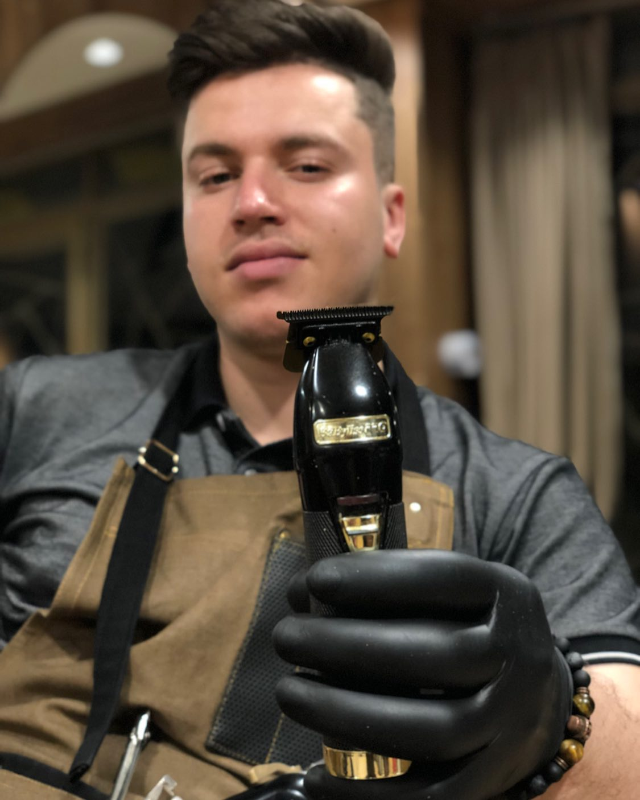
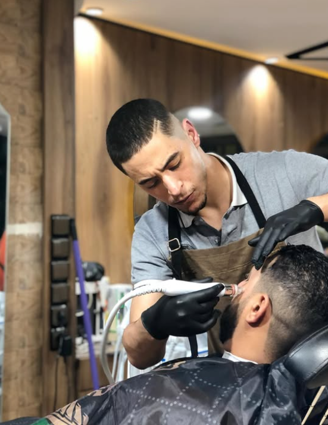

JAMAL
Master Barber · Fades & Classic Cuts
Timeless cuts. Classic shaves. Where tradition meets style in the heart of the Middle Atlas.
Premium grooming services in Azrou, serving Ifrane and the Middle Atlas region.
Precision cuts for all hair types — fades, tapers, and classic styles.
Hot towel straight razor shaves and sharp beard line-ups.
Modern styling, slick-backs, and textured looks for any occasion.
Friendly, patient cuts for the little ones. All ages welcome.
Founded in the heart of Azrou, Morocco, TWINS Barbershop is the go-to destination for quality grooming in the Ifrane province. Our twin barbers — Jamal and Nabil — blend traditional Moroccan barbering with modern techniques.
Whether you're a local resident or a tourist exploring the Middle Atlas, our shop offers a warm welcome, expert skill, and attention to every detail. We serve clients from Azrou, Ifrane, Ain Leuh, and across the Fès-Meknès region.
Twin brothers. Double the talent. Your style, perfected.

Master Barber · Fades & Classic Cuts

Beard Specialist · Styling & Traditional Shaves
Walk-ins welcome, or reach out to book your appointment.
Mon – Sun: 9:00 AM – 9:00 PM
We are in Azrou, Morocco, only 17 km from Ifrane. Get directions.
Classic haircuts, fades, beard trims, straight razor shaves, hair styling, and kids haircuts.
Absolutely! We welcome tourists and visitors from Ifrane, the Middle Atlas, and beyond. We speak Arabic, French, and basic English.
Located in the heart of Azrou, just 17 km from Ifrane.